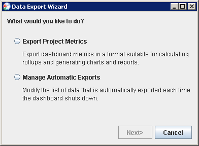
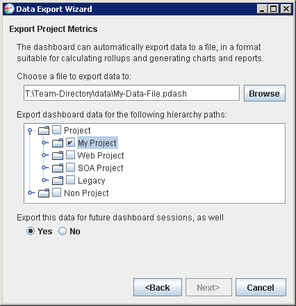
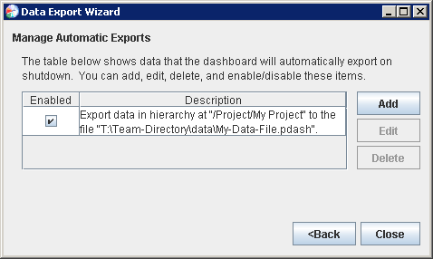
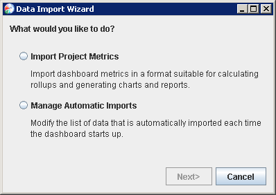
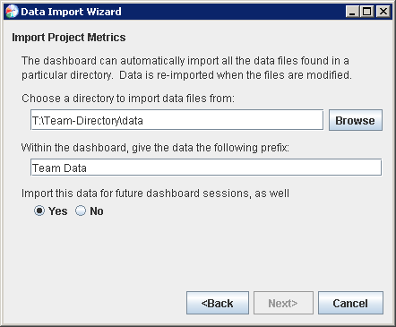
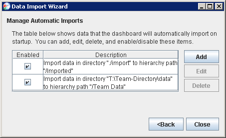

Export"
from the configuration menu.
Export"
from the configuration menu.If you are participating on a team project, the dashboard will automatically export your team project data on a periodic basis. However, there may be times that you wish to publish your latest data immediately (for example, if you are on your way to a team meeting). Just click the script menu and choose the "Export My Data Now" option.
If you have been collecting data that is not part of a team project,
you can export that data if you wish. Just
choose "Tools Export"
from the configuration menu.

To export data, choose the "Export Project Metrics" option. The following page will be displayed:

This screen allows you to choose the file where data will be exported, and the projects in your hierarchy that should be included in the export. When you click "Next", data for the selected projects will be exported to the designated file. This will include metrics data (e.g. the data visible on the plan summary form), defect data (e.g. the data visible in the defect log), and earned value data (if any of the selected projects are contained in any earned value task lists).
If you would like this data to be exported automatically each time the dashboard shuts down, choose "Yes" on the final checkbox. This will add this export operation to a permanent list of automatic exports. You can view that list, and alter its contents, by choosing the "Manage Automatic Exports" option on the initial page of the Data Export Wizard.

Advanced: Individuals who are interested in viewing/reusing the data in these exported files are free to do so; the export file is a simple ZIP archive with XML files inside. Keep in mind, however, that this file format is subject to change in future versions of the dashboard.
Files that have been exported by the dashboard (as described above)
can be imported by the Data Import Wizard. To open the Data Import Wizard,
choose "Tools Import"
from the configuration menu.

To import data, choose the "Import Project Metrics" option.

This screen allows you to choose a directory containing files that should be imported. The directory will be scanned for files previously exported by the dashboard (such files should have the ".pdash" suffix). The data in the files will be imported into the dashboard's data repository with the prefix chosen.
Metrics data imported in this way will be visible to tools like PROBE, the Data Analysis Center, and data rollup templates. Earned value data imported in this way can be added to earned value roll-ups. This provides many possibilities for rolling up data to the team level, and for analyzing data trends across projects.
If you would like the data to be imported the next time the dashboard starts, select Yes on the final checkbox. This will add the import operation to a permanent list of automatic imports. You can view that list, and alter its contents, by choosing the "Manage Automatic Imports" option on the initial page of the Data Import Wizard.

Many of the reporting forms in the dashboard have links that say "Export to Excel...". When this link is clicked, an Excel sheet will come up that contains the data from that form.
By default, the data will be exported dynamically as a linked workbook. When the workbook opens, Excel will connect to the dashboard and retrieve the data items. At any time, you can ask Excel to refresh the data by right-clicking on the data and choosing "Refresh." This dynamic refresh behavior can be very powerful. For example, you can create additional sheets in the workbook to analyze and chart the raw data, then save the workbook. In the future, you can make sure the dashboard is running, reopen this workbook, and ask Excel to refresh the data. Excel will reload the raw data and your charts will update.
In some web browsers, that dynamic behavior may not work properly. In that case, you can try switching to a static export. The static export will show the values of process variables at the instant that the export was done. For instructions on configuring for static exports, see the related FAQ.
The "Export to Excel..." option will appear on
If you have PSP data from historical projects, and you would like to import them into the dashboard so they contribute to your "To Date" data, PROBE calculations, and "Data Analysis" charts/reports, you can use the "Import PSP Data" template. To enter your historical data into the dashboard, follow these steps:
The data entry is a manual process, but not a time-consuming one; it should be possible to enter the data from an entire PSP course in about 15 minutes.